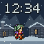
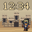
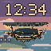
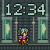
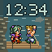
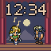
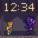
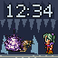
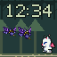

19 faces · 64×64 · 25 FPS · 12-second loops. Preview assets with a fixed 12:34 display; not installable SNPK packs.

01 · Narshe / Snowfall
Terra crosses the snowy street, pauses, walks fully off the right edge and returns from the left.
Native GIF · Still PNG
02 · Figaro / Desert Citadel
Locke walks in place facing the camera, using his original front-facing walk cycle.
Native GIF · Still PNG
03 · Zozo / Rain & Rooftops
Locke paces the rain-soaked alley with original walking frames and aligned feet.
Native GIF · Still PNG
05 · Phantom Train / Last Departure
The Phantom Train drives left through scrolling forest, with cycling wheel rods and drifting steam.
Native GIF · Still PNG
06 · Blackjack / Above the Clouds
The Blackjack sails over a sunset sea, a scrolling island citadel, reflective water and layered clouds.
Native GIF · Still PNG
07 · Floating Continent / Edge of Ruin
Interceptor rushes in from the right, attacks the left edge, rebounds and runs back off the right side as Shadow patrols.
Native GIF · Still PNG
08 · Magitek / Esper Chamber
Terra walks between bubbling Esper tanks as green light pulses and indicators blink.
Native GIF · Still PNG
09 · Lete River / Hold On!
A swerving raft, Sabin paddling and spray breaking around river rocks.
Native GIF · Still PNG
10 · Narshe Cavern / Dance for Treasure
Mog dances and hops; Locke approaches and a treasure chest bursts with sparks.
Native GIF · Still PNG
11 · Opera House / A Rose for You
Celes and Locke alternate singing, with musical notes rising from the active singer.
Native GIF · Still PNG
12 · Phantom Forest / Interceptor!
Interceptor hangs back farther and takes a short step back before jumping toward the ghost.
Native GIF · Still PNG
13 · Sealed Gate / Esper Awakening
Locke repeatedly jumps, throws up his arms and darts around while Terra transforms.
Native GIF · Still PNG
14 · South Figaro / Rooftop Escape
Two runners leap across scrolling rooftop gaps against a dusk skyline.
Native GIF · Still PNG
15 · Ultros / Fire Dance
Sabin performs Fire Dance: circling flames build into a sweeping fire attack against Ultros.
Native GIF · Still PNG
16 · Figaro Desert / Chocobo Dash
Terra rides a running Chocobo while Locke keeps pace through rolling dunes.
Native GIF · Still PNG
17 · Ultros / Fire on the River
Terra charges and casts Fire; Ultros recoils, then sends an ink-dark counterattack.
Native GIF · Still PNG
18 · Whelk / Shell Shock
Whelk is reassembled with its head, foot and shell connected as a single sprite.
Native GIF · Still PNG
19 · Magitek Armor / Runic & Ice
Celes raises her Runic blade, absorbs incoming magic and answers with ice.
Native GIF · Still PNG
22 · Forest Swarm / Dance & Cure
Mog dances through a leaf attack, then green healing sparks rise around him.
Native GIF · Still PNG